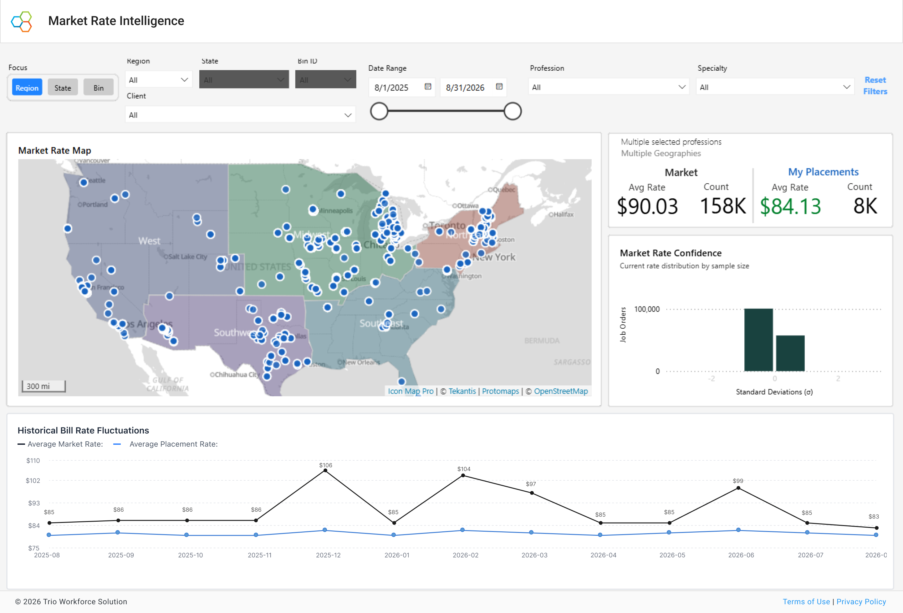

Healthcare workforce decisions are more complex than ever, and national averages and static benchmarks can't keep pace with today's labor market. Market Intelligence gives leaders current market visibility to make more confident workforce decisions.
National averages mask local reality. A national average of $90.03 hides a market that swings from the low $80s to over $100 by region, specialty, and facility. Benchmarking against national averages drives up your contingent labor costs. Market Intelligence puts your own placement averages next to the live market, delivering defensible rate transparency in seconds, not on a spreadsheet.
Every insight should lead to a better workforce decision. Market Intelligence is designed to help you validate rates, reduce unnecessary spend, support negotiations, and answer critical questions in seconds.
Validate every rate before committing budget. Check a proposed bill rate against the live market for that role, specialty, and region first.
Eliminate agency premium overpayment by identifying rate outliers across your organization. Spot where you are paying above the curve and bring contract labor spend back in line with true market conditions.
Set defensible, competitive rates. CFOs and procurement teams can back every rate decision with current market data they can trust.
Get answers in seconds, not hours by replacing manual analyst reports and spreadsheets, with instant, interactive rate visualization built for immediate decision-making.
Explore the live Market Intelligence report. Every view uses current market data to answer one essential question: where do your rates stand in today's market? The dashboard turns raw contingent labor data into clear financial leverage.

1 2 3 4See live bill-rate density across regions, identify pricing patterns, and explore market conditions with interactive region-level volume and rate overlays.
In a single glance, compare your placements to live market rates to understand where opportunities exist.
See how tightly rates cluster by sample size, so you know how much weight to put on any single benchmark before you set a rate.
Understand market fluctuations and rate spikes over the past 12 months to proactively forecast staffing costs and support more informed workforce planning.
The same market intelligence, tailored to the decisions each workforce leader makes every day.
 FPO photo
FPO photoBenchmark live market rates, build competitive workforce strategies, and make more confident rate decisions.
Traditional reports give you a static benchmark. Market Intelligence gives you the live market and the history behind it, built for how healthcare actually buys labor.
Market Intelligence by Trio is a real-time workforce analytics tool that tracks and analyzes live bill rates, local supply trends, and 12-month historical rate volatility across nursing and allied health specialties.
Trio's Market Intelligence is different from traditional healthcare staffing reports that rely on static, lagging quarterly benchmarks. Market Intelligence updates daily using live job order data, allowing healthcare leaders to compare active facility placements against live market conditions in real time.
CFOs, CNOs, CHROs, Procurement Directors, and Talent Managers who need objective, defensible data to negotiate contract labor rates and control agency spend benefit most from Trio's Market Intelligence.
Trio's Market Intelligence updates daily, so decisions are based on current, real-time market conditions.
Trio's Market Intelligence doesn't replace traditional staffing market reports; it complements them with dynamic, visual analytics that support faster decisions.
The Market Intelligence full demo is about 30 minutes, with a guided walkthrough of the platform and real-world use cases.
Schedule a demo and we will show you how your rates compare against the live market for your roles, specialties, and regions.